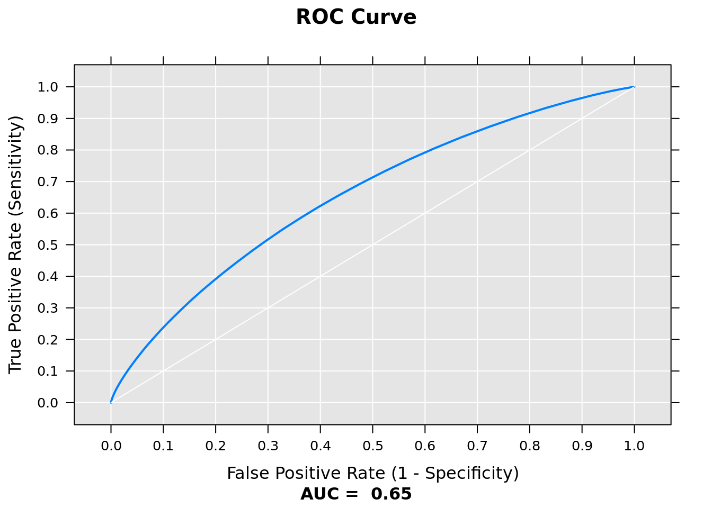
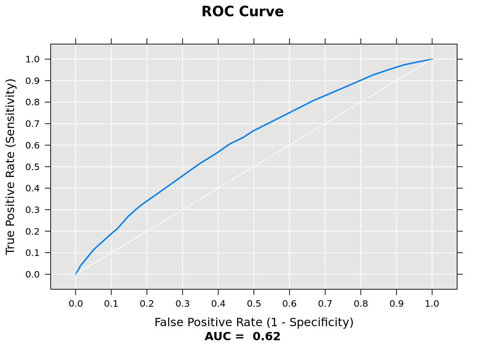

Chapter 10 Modeling with Microsoft R Server
10.1 Import CSV to XDF
To take full advantage of the PEMA algorithms provided by MRS, we will import the merged data, currently saved as csv in blob storage, into an xdf.
We first have some housekeeping items to take care. We need to specify the spark compute context for the RevoScaleR package to properly utlize the Spark cluster. Saving a text file to HDFS creates blocks of the data and saves them in separate directories, and also saves an additional directory entitled “_SUCCESS" to indicate the import operation was successful. We need to remove this file before importing to xdf, as it has no value for the final data.
Further, in order to make sure the MRS modeling functions respect the data types of the columns in our merged dataset, we need to provide it with some column metadata. This can be provided with the colInfo argument inside of rxImport.
Lastly, we need to provide MRS with pointers to the HDFS store we will be saving our XDF to.
rxOptions(fileSystem = RxHdfsFileSystem(),
reportProgress = 0)
dataDir <- "/user/RevoShare/alizaidi/delayDataLarge"
if(rxOptions()$hdfsHost == "default") {
fullDataDir <- dataDir
} else {
fullDataDir <- paste0(rxOptions()$hdfsHost, dataDir)
}
computeContext <- RxSpark(consoleOutput = TRUE)
# there's a folder called SUCCESS_ that we need to delete manually
file_to_delete <- file.path(data_dir, "delayDataLarge", "JoinAirWeatherDelay", "_SUCCESS")
delete_command <- paste("fs -rm", file_to_delete)
rxHadoopCommand(delete_command)
colInfo <- list(
ArrDel15 = list(type="numeric"),
Year = list(type="factor"),
Month = list(type="factor"),
DayofMonth = list(type="factor"),
DayOfWeek = list(type="factor"),
Carrier = list(type="factor"),
OriginAirportID = list(type="factor"),
DestAirportID = list(type="factor"),
RelativeHumidityOrigin = list(type="numeric"),
AltimeterOrigin = list(type="numeric"),
DryBulbCelsiusOrigin = list(type="numeric"),
WindSpeedOrigin = list(type="numeric"),
VisibilityOrigin = list(type="numeric"),
DewPointCelsiusOrigin = list(type="numeric"),
RelativeHumidityDest = list(type="numeric"),
AltimeterDest = list(type="numeric"),
DryBulbCelsiusDest = list(type="numeric"),
WindSpeedDest = list(type="numeric"),
VisibilityDest = list(type="numeric"),
DewPointCelsiusDest = list(type="numeric"),
CRSDepTime = list(type = "numeric"),
CRSArrTime = list(type = "numeric"),
DepDelay = list(type = "numeric"),
ArrDelay = list(type = "numeric")
)
myNameNode <- "default"
myPort <- 0
hdfsFS <- RxHdfsFileSystem(hostName = myNameNode,
port = myPort)
joined_txt <- RxTextData(file.path(data_dir, "delayDataLarge", "JoinAirWeatherDelay"),
colInfo = colInfo,
fileSystem = hdfsFS)
dest_xdf <- RxXdfData(file.path(data_dir, "delayDataLarge", "joinedAirWeatherXdf"),
fileSystem = hdfsFS)
rxImport(inData = joined_txt, dest_xdf, overwrite = TRUE)Now that we have imported our data to an XDF, we can get some information about the variables:
rxGetInfo(RxXdfData(file.path(data_dir, "delayDataLarge", "joinedAirWeatherXdf"),
fileSystem = hdfsFS), getVarInfo = T, numRows = 2)## File name: /user/RevoShare/alizaidi/delayDataLarge/joinedAirWeatherXdf
## Number of composite data files: 80
## Number of observations: 148619655
## Number of variables: 22
## Number of blocks: 320
## Compression type: zlib
## Variable information:
## Var 1: ArrDel15, Type: numeric, Low/High: (0.0000, 1.0000)
## Var 2: Year
## 26 factor levels: 1990 1992 1994 1997 1999 ... 2005 2008 2010 2011 2012
## Var 3: Month
## 12 factor levels: 3 8 9 2 5 ... 11 6 12 7 10
## Var 4: DayofMonth
## 31 factor levels: 11 23 9 26 4 ... 12 8 27 25 22
## Var 5: DayOfWeek
## 7 factor levels: 7 5 3 2 4 1 6
## Var 6: Carrier
## 30 factor levels: US UA DL NW DH ... PA (1) KH HA PS VX
## Var 7: OriginAirportID
## 374 factor levels: 10821 13930 11057 13230 11433 ... 10559 13341 14314 11931 10558
## Var 8: DestAirportID
## 378 factor levels: 10135 10136 10140 10146 10155 ... 10559 11931 10894 14475 12899
## Var 9: CRSDepTime, Type: numeric, Low/High: (0.0000, 24.0000)
## Var 10: CRSArrTime, Type: numeric, Low/High: (0.0000, 2400.0000)
## Var 11: RelativeHumidityOrigin, Type: numeric, Low/High: (0.0000, 100.0000)
## Var 12: AltimeterOrigin, Type: numeric, Low/High: (28.1700, 31.1600)
## Var 13: DryBulbCelsiusOrigin, Type: numeric, Low/High: (-46.1000, 47.2000)
## Var 14: WindSpeedOrigin, Type: numeric, Low/High: (0.0000, 81.0000)
## Var 15: VisibilityOrigin, Type: numeric, Low/High: (0.0000, 88.0000)
## Var 16: DewPointCelsiusOrigin, Type: numeric, Low/High: (-41.7000, 29.0000)
## Var 17: RelativeHumidityDest, Type: numeric, Low/High: (0.0000, 100.0000)
## Var 18: AltimeterDest, Type: numeric, Low/High: (28.1700, 31.1600)
## Var 19: DryBulbCelsiusDest, Type: numeric, Low/High: (-46.1000, 53.9000)
## Var 20: WindSpeedDest, Type: numeric, Low/High: (0.0000, 63.0000)
## Var 21: VisibilityDest, Type: numeric, Low/High: (0.0000, 88.0000)
## Var 22: DewPointCelsiusDest, Type: numeric, Low/High: (-43.0000, 29.0000)
## Data (2 rows starting with row 1):
## ArrDel15 Year Month DayofMonth DayOfWeek Carrier OriginAirportID
## 1 0 1990 3 11 7 US 10821
## 2 1 1992 8 23 7 UA 13930
## DestAirportID CRSDepTime CRSArrTime RelativeHumidityOrigin
## 1 10135 10 1056 NA
## 2 10135 6 928 NA
## AltimeterOrigin DryBulbCelsiusOrigin WindSpeedOrigin VisibilityOrigin
## 1 NA NA NA NA
## 2 NA NA NA NA
## DewPointCelsiusOrigin RelativeHumidityDest AltimeterDest
## 1 NA NA NA
## 2 NA NA NA
## DryBulbCelsiusDest WindSpeedDest VisibilityDest DewPointCelsiusDest
## 1 NA NA NA NA
## 2 NA NA NA NA10.2 Splitting XDF into Train and Test Tests
Prior to estimating our predictive models, we need to split our dataset into a training set, which we’ll use for estimation, and a test set that we’ll use for validating our results.
Since we have time series data (data ordered by time), we will split our data by time. We’ll use the data prior to 2012 for training, and the data in 2012 for testing.
trainDS <- RxXdfData( file.path(dataDir, "finalDataTrain" ),
fileSystem = hdfsFS)
rxDataStep( inData = dest_xdf, outFile = trainDS,
rowSelection = ( Year != 2012 ), overwrite = T )
testDS <- RxXdfData( file.path(dataDir, "finalDataTest" ),
fileSystem = hdfsFS)
rxDataStep( inData = dest_xdf, outFile = testDS,
rowSelection = ( Year == 2012 ), overwrite = T )10.3 Training Binary Classification Models
Now that we have our train and test sets, we can estimate our predictive model. Let’s try to predict the probability that a flight will be delayed as a function of other variables.
10.3.1 Logistic Regression Models
RevoScaleR provides a highly optimized logistic regression model based on the Iteratively Reweighted Least Squares (IRLS) algorithm, which can be called using the rxLogit function. The rxLogit function looks nearly identical to the standard logistic regression function provided by the glm function in the base stats package, taking a formula as it’s first argument, and the data as it’s second argument.
We create a handy function make_formula for creating formula objects based on the variables in the all_vars argument of the function.
make_formula <- function(resp_var,
vars_exclude,
all_vars) {
features <- all_vars[!(all_vars %in% c(resp_var, vars_exclude))]
form <- as.formula(paste(resp_var, paste0(features, collapse = " + "),
sep = " ~ "))
return(form)
}
data_names <- rxGetVarNames(trainDS)
form <- make_formula("ArrDel15", c("DepDelay", "ArrDelay"), data_names)
system.time(logitModel <- rxLogit(form, data = trainDS))
# user system elapsed
# 15.916 17.068 302.806
base::summary(logitModel)10.3.2 Tree and Ensemble Classifiers
Training the logistic regression model on the full training set took about five minutes. Logistic regression models are frequently used for classification problems due to their interpability and extensibility. However, without adequeate feature engineering, logistic regression models tend to lack the expressiveness and predictive power of ensemble methods, such as boosted trees, or random forests.
Using the same methodology as above, we could estimate decision trees and decision forests (random forests) just as easily with the same formula:
system.time(dTreeModel <- rxDTree(form, data = trainDS,
maxDepth = 6, pruneCp = "auto"))
# user system elapsed
# 29.088 67.940 1265.63310.4 Testing Models
Now that we have estimated our models, we can calculate valuation metrics for them by scoring on the test/held-out set.
load("testModels.RData")
treePredict <- RxXdfData(file.path(dataDir, "treePredict"),
fileSystem = hdfsFS)
system.time(rxPredict(dTreeModel, data = testDS, outData = treePredict,
extraVarsToWrite = c("ArrDel15"), overwrite = TRUE))## user system elapsed
## 0.204 0.036 55.493# user system elapsed
# 13.436 3.616 142.326
logitPredict <- RxXdfData(file.path(dataDir, "logitPredict"),
fileSystem = hdfsFS)
rxPredict(logitModel, data = testDS, outData = logitPredict,
extraVarsToWrite = c("ArrDel15"),
type = 'response', overwrite = TRUE)
# Calculate ROC and Area Under the Curve (AUC).
logitRoc <- rxRoc("ArrDel15", "ArrDel15_Pred", logitPredict)
logitAuc <- rxAuc(logitRoc)
plot(logitRoc)
# Calculate ROC and Area Under the Curve (AUC)
treeRoc <- rxRoc("ArrDel15", "ArrDel15_Pred", treePredict)
treeAuc <- rxAuc(treeRoc)
plot(treeRoc)
save(dTreeModel, file = "dTreeModel.RData")